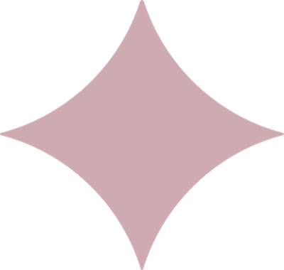
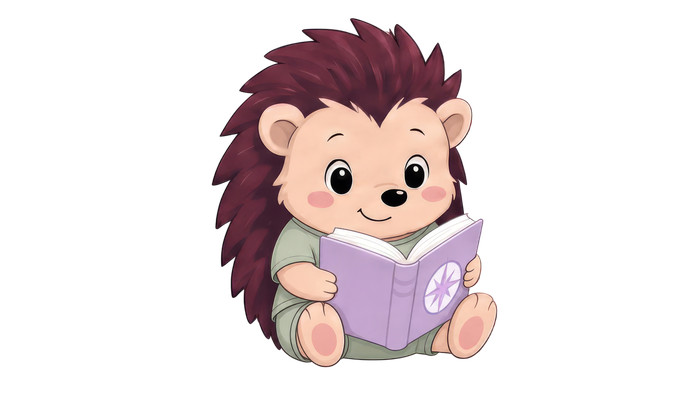

Центр развития речи и мозга
Наша команда,
Наша команда,
которой доверяют родители
Логопеды, дефектологи и нейропсихологи, которые помогают каждому ребёнку раскрыть свой потенциал — своим темпом, с интересом и верой в себя.
Основные направления коррекционной работы
- Запуск речи, работа с ЗРР
- Коррекция ОНР, дизартрии, постановка звуков
- Коррекция дисграфии, дислексии
- Нейропсихология, нейродиагностика
- Подготовка к школе, раннее развитие
- Работа с РАС, ЗПР, ТМНР, интеллектуальной недостаточностью
- Миофункциональная коррекция нарушений дыхания, жевания и глотания
- Логомассаж

Забота
Тёплое и бережное отношение к каждому ребёнку
Экспертиза
Профильное образование и постоянное развитие
Доверие
Безопасная среда, где спокойно и детям, и родителям